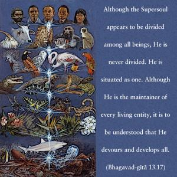
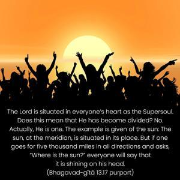
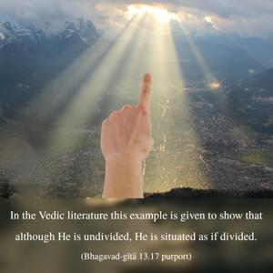
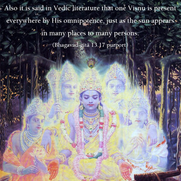
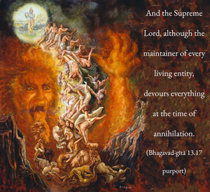

Although the Supersoul appears to be divided among all beings, He is never divided. He is situated as one. Although He is the maintainer of every living entity, it is to be understood that He devours and develops all.





The Lord is situated in everyone’s heart as the Supersoul. Does this mean that He has become divided? No. Actually, He is one. The example is given of the sun: The sun, at the meridian, is situated in its place. But if one goes for five thousand miles in all directions and asks, “Where is the sun?” everyone will say that it is shining on his head. In the Vedic literature this example is given to show that although He is undivided, He is situated as if divided. Also it is said in Vedic literature that one Viṣṇu is present everywhere by His omnipotence, just as the sun appears in many places to many persons. And the Supreme Lord, although the maintainer of every living entity, devours everything at the time of annihilation. This was confirmed in the Eleventh Chapter when the Lord said that He had come to devour all the warriors assembled at Kurukṣetra. He also mentioned that in the form of time He devours also. He is the annihilator, the killer of all. When there is creation, He develops all from their original state, and at the time of annihilation He devours them. The Vedic hymns confirm the fact that He is the origin of all living entities and the rest of all. After creation, everything rests in His omnipotence, and after annihilation everything again returns to rest in Him. These are the confirmations of Vedic hymns. Yato vā imāni bhūtāni jāyante yena jātāni jīvanti yat prayanty abhisaṁ viśanti tad brahma tad vijijñāsasva (Taittirīya Upaniṣad 3.1).